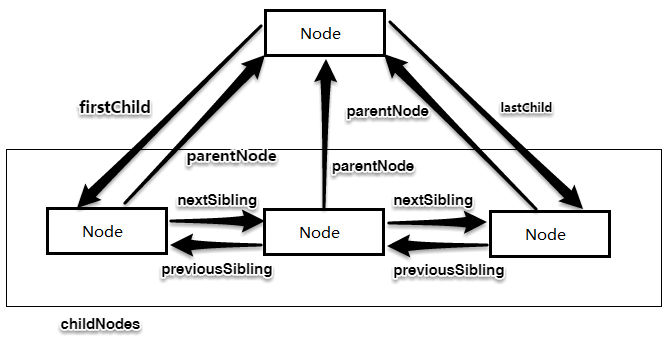
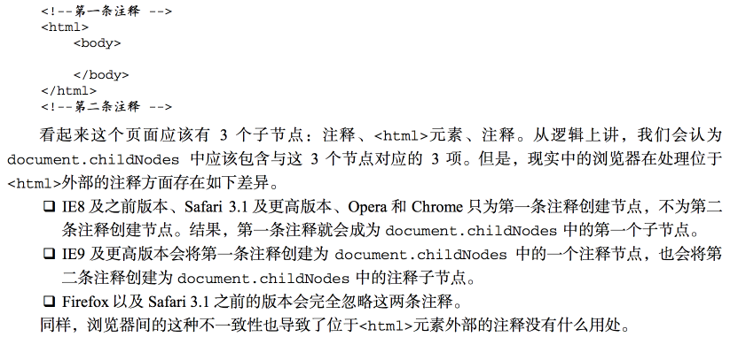
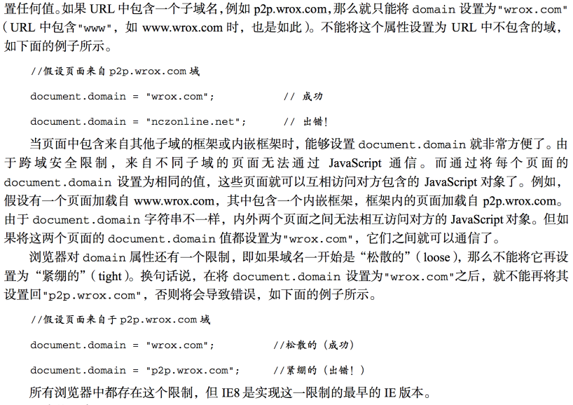

IE中所有DOM对象都是以COM对象的形式实现的。IE中的DOM对象与原生的JavaScript对象的行为或活动特点并不一致。
DOM可以将任何HTML/XML文档描绘成一个由多层节点构成的结构。
文档节点（Document节点）是每个文档的根节点。
<html>元素是文档元素，文档元素是文档的最外层元素，文档中的其他所有元素都包含在文档元素中。
每个文档只能有一个文档元素。在HTML页面中，文档元素始终都是<html>元素，在XML中，任何元素都可能成为文档元素。
DOM1级定义了一个Node接口，该接口由DOM中的所有节点类型实现。
这个Node接口在JavaScript中是作为Node类型实现的；除了IE外，其他所有浏览器中都可以访问到这个类型。
JavaScript中的所有节点类型都继承自Node类型，因此所有节点类型都共享着相同的基本属性和方法。
每个节点都有一个nodeType属性，用于表明节点类型。共有12种节点类型：
节点间关系可以用家族关系来描述，相当于把文档树比喻成家谱。
每个节点都有一个childNodes属性，保存着一个NodeList对象。
（NodeList对象是一种类数组对象，用于保存一组有序的节点，可以通过位置来访问这些节点
它实际上是基于DOM结构动态执行查询的结果，因此DOM结构的变化能够自动反映在NodeList对象中。）
操作节点方法
1.文档子节点
document.doctype; // <!DOCTYPE>节点引用
document.docuemntElement; // <html>节点引用
document.body; // <body>节点引用
document.head; // ie6/7/8不支持，其他标准浏览器支持。
// var head = document.head || document.getElementsByTagName('head')[0];
由于浏览器对 document.doctype 的支持不一致,因此这个属性的用处很有限，如图2。
2.文档信息
3.查找元素
4.特殊集合
5.文档写入
1.操作文本节点的方法
2.创建文本节点
3.规范化文本节点
4.分割文本节点
元素的特性在DOM中以Attr类型来表示。
特性就是存在与元素的attributes属性中的节点。
图1
图2
图3
参考：
1.